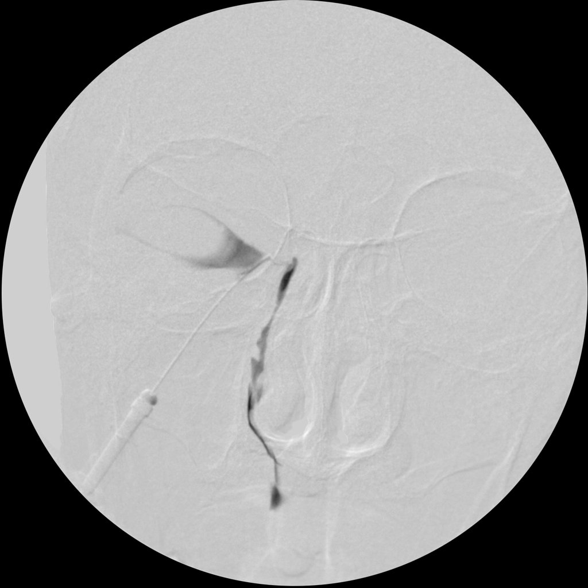
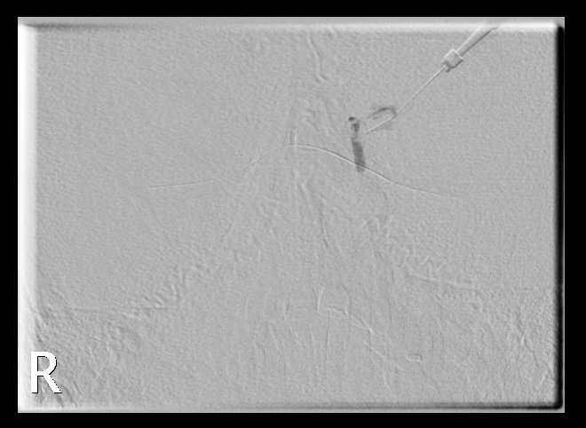

إدخال قثطار دقيق في القُنيّة الدمعية السفلية (inferior canaliculus) وحقن مادة ظليلة لتصوير الكيس الدمعي والقناة الأنفية الدمعية حتى الأنف.
🎯 Purpose الغرض
تحديد مكان وسبب انسداد مجرى الدموع عند المريض الذي يعاني من الدموع المستمرة (epiphora)، مثل انسداد القناة الأنفية الدمعية أو حصاة دمعية.
💉 Contrast الصبغة وطريقة إعطائها
مادة ظليلة (زيتية مثل Lipiodol أو يودية ذائبة بالماء) تُحقن ببطء عبر قثطار في القُنيّة السفلية، وغالباً للجهتين معاً، ويُفضَّل التصوير بالطرح الرقمي (subtraction DCG).
📋 Patient preparation تحضير المريض
لا يحتاج صياماً
قطرة مخدّر موضعي للعين
توسيع فتحة النقطة الدمعية (punctum dilatation) عند الحاجة
صورة أولية (scout)
السؤال عن حساسية المادة الظليلة
📸 Views / Positions الإسقاطات والوضعيات
Scout: OM (occipitomental)
OM أثناء الحقن (أو subtraction)
Lateral
صورة متأخرة بعد الجلوس لتقييم التصريف
🚫 Contraindications موانع الفحص
التهاب الكيس الدمعي الحاد (acute dacryocystitis)
حساسية شديدة للمادة الظليلة
⚠️ Complications المضاعفات
ألم وانزعاج
أذى القُنيّة أو مسار كاذب (false passage)
التهاب بعد الفحص
🖼️ Images · الصور
Normal dacryocystogram (subtraction)تصوير الجهاز الدمعي طبيعي🟢 Normal

Case courtesy of Frank Gaillard, Radiopaedia.org, rID: 14397 · CC BY-NC-SA 3.0
Nasolacrimal duct obstructionانسداد القناة الأنفية الدمعية🔴 Pathology · مرضي

Case courtesy of Siang Ching Raymond Chieng, Radiopaedia.org, rID: 173105 · CC BY-NC-SA 3.0المصادر